pacman::p_load(igraph, tidygraph, ggraph,
visNetwork, lubridate, clock,
tidyverse, graphlayouts)Hands-on Exercise 8
Modelling, Visualising and Analysing Network Data with R
1 Overview
In this hands-on exercise, we will learn how to model, analyse and visualise network data using R.
By the end of this hands-on exercise, we will be able to:
- create graph object data frames, manipulate them using appropriate functions of dplyr, lubridate, and tidygraph,
- build network graph visualisation using appropriate functions of ggraph,
- compute network geometrics using tidygraph,
- build advanced graph visualisation by incorporating the network geometrics, and
- build interactive network visualisation using visNetwork package.
2 Installing and launching R packages
In this hands-on exercise, these R packages will be installed and launched:
For network data modelling and visualisation:
- igraph
- tidygraph
- ggraph
- visNetwork
For time data handling and wrangling:
3 The Data
The data sets used in this hands-on exercise is from an oil exploration and extraction company. There are two data sets:
- contains the nodes data
- GAStech_email_nodes.csv which consist of the names, department and title of the 55 employees.
- contains the edges (also know as link) data
- GAStech-email_edges.csv which consists of two weeks of 9063 emails correspondances between 55 employees.
3.1 Importing network data from files
In this step, we import GAStech_email_node.csv and GAStech_email_edges-v2.csv into RStudio environment by using read_csv() of readr package.
GAStech_nodes <- read_csv("data/GAStech_email_node.csv")
GAStech_edges <- read_csv("data/GAStech_email_edge-v2.csv")3.2 Reviewing the imported data
Next, we will examine the structure of the data frame using glimpse() of dplyr.
glimpse(GAStech_edges)Rows: 9,063
Columns: 8
$ source <dbl> 43, 43, 44, 44, 44, 44, 44, 44, 44, 44, 44, 44, 26, 26, 26…
$ target <dbl> 41, 40, 51, 52, 53, 45, 44, 46, 48, 49, 47, 54, 27, 28, 29…
$ SentDate <chr> "6/1/2014", "6/1/2014", "6/1/2014", "6/1/2014", "6/1/2014"…
$ SentTime <time> 08:39:00, 08:39:00, 08:58:00, 08:58:00, 08:58:00, 08:58:0…
$ Subject <chr> "GT-SeismicProcessorPro Bug Report", "GT-SeismicProcessorP…
$ MainSubject <chr> "Work related", "Work related", "Work related", "Work rela…
$ sourceLabel <chr> "Sven.Flecha", "Sven.Flecha", "Kanon.Herrero", "Kanon.Herr…
$ targetLabel <chr> "Isak.Baza", "Lucas.Alcazar", "Felix.Resumir", "Hideki.Coc…
Warning
The output report of GAStech_edges above reveals that the SentDate is treated as “Character” data type instead of date data type. This is an error! Before we continue, it is important for us to change the data type of SentDate field back to “Date”” data type.
3.3 Wrangling time
The code chunk below will be used to perform the changes.
GAStech_edges <- GAStech_edges %>%
mutate(SendDate = dmy(SentDate)) %>%
mutate(Weekday = wday(SentDate,
label = TRUE,
abbr = FALSE))Things to learn from the code chunk above
- both dmy() and wday() are functions of lubridate package.
- dmy() transforms the SentDate to Date data type.
- wday() returns the day of the week as a decimal number or an ordered factor if label is TRUE. The argument abbr is FALSE keep the daya spells in full, i.e. Monday. The function will create a new column in the data.frame i.e. Weekday and the output of wday() will save in this newly created field.
- the values in the Weekday field are in ordinal scale.
3.4 Reviewing the revised date fields
Table below shows the data structure of the reformatted GAStech_edges data frame
Rows: 9,063
Columns: 10
$ source <dbl> 43, 43, 44, 44, 44, 44, 44, 44, 44, 44, 44, 44, 26, 26, 26…
$ target <dbl> 41, 40, 51, 52, 53, 45, 44, 46, 48, 49, 47, 54, 27, 28, 29…
$ SentDate <chr> "6/1/2014", "6/1/2014", "6/1/2014", "6/1/2014", "6/1/2014"…
$ SentTime <time> 08:39:00, 08:39:00, 08:58:00, 08:58:00, 08:58:00, 08:58:0…
$ Subject <chr> "GT-SeismicProcessorPro Bug Report", "GT-SeismicProcessorP…
$ MainSubject <chr> "Work related", "Work related", "Work related", "Work rela…
$ sourceLabel <chr> "Sven.Flecha", "Sven.Flecha", "Kanon.Herrero", "Kanon.Herr…
$ targetLabel <chr> "Isak.Baza", "Lucas.Alcazar", "Felix.Resumir", "Hideki.Coc…
$ SendDate <date> 2014-01-06, 2014-01-06, 2014-01-06, 2014-01-06, 2014-01-0…
$ Weekday <ord> Friday, Friday, Friday, Friday, Friday, Friday, Friday, Fr…3.5 Wrangling attributes
A close examination of GAStech_edges data.frame reveals that it consists of individual e-mail flow records. This is not very useful for visualisation.
In view of this, we will aggregate the individual by date, senders, receivers, main subject and day of the week.
The code chunk:
GAStech_edges_aggregated <- GAStech_edges %>%
filter(MainSubject == "Work related") %>%
group_by(source, target, Weekday) %>%
summarise(Weight = n()) %>%
filter(source!=target) %>%
filter(Weight > 1) %>%
ungroup()Things to learn from the code chunk above
- four functions from dplyr package are used. They are:
filter(),group(),summarise(), andungroup(). - The output data.frame is called GAStech_edges_aggregated.
- A new field called Weight has been added in GAStech_edges_aggregated.
3.6 Reviewing the revised edges file
Table below shows the data structure of the reformatted GAStech_edges data frame
Rows: 1,372
Columns: 4
$ source <dbl> 1, 1, 1, 1, 1, 1, 1, 1, 1, 1, 1, 1, 1, 1, 1, 1, 1, 1, 1, 1, 1,…
$ target <dbl> 2, 2, 2, 2, 2, 3, 3, 3, 3, 3, 4, 4, 4, 4, 4, 5, 5, 5, 5, 5, 6,…
$ Weekday <ord> Sunday, Monday, Tuesday, Wednesday, Friday, Sunday, Monday, Tu…
$ Weight <int> 5, 2, 3, 4, 6, 5, 2, 3, 4, 6, 5, 2, 3, 4, 6, 5, 2, 3, 4, 6, 5,…4 Creating network objects using tidygraph
In this section, we will learn how to create a graph data model by using tidygraph package. It provides a tidy API for graph/network manipulation. While network data itself is not tidy, it can be envisioned as two tidy tables, one for node data and one for edge data. tidygraph provides a way to switch between the two tables and provides dplyr verbs for manipulating them. Furthermore it provides access to a lot of graph algorithms with return values that facilitate their use in a tidy workflow.
Refer to these two articles for more information:
4.1 The tbl_graph object
tbl_graph() |
as_tbl_graph() |
|
|---|---|---|
| Description | creates a tbl_graph network object from nodes and edges data. | converts network data and objects to a tbl_graph network. Below are network data and objects supported by as_tbl_graph() |
| Supported Data/Objects |
|
|
4.2 The dplyr verbs in tidygraph
- activate() verb from tidygraph serves as a switch between tibbles for nodes and edges. All dplyr verbs applied to tbl_graph object are applied to the active tibble.

- In the above the .N() function is used to gain access to the node data while manipulating the edge data. Similarly .E() will give you the edge data and .G() will give you the tbl_graph object itself.
4.3 Using tbl_graph() to build tidygraph data model
In this section, you will use tbl_graph() of tidygraph package to build an tidygraph’s network graph data.frame.
GAStech_graph <- tbl_graph(nodes = GAStech_nodes,
edges = GAStech_edges_aggregated,
directed = TRUE)4.4 Reviewing the output tidygraph’s graph object
GAStech_graph# A tbl_graph: 54 nodes and 1372 edges
#
# A directed multigraph with 1 component
#
# Node Data: 54 × 4 (active)
id label Department Title
<dbl> <chr> <chr> <chr>
1 1 Mat.Bramar Administration Assistant to CEO
2 2 Anda.Ribera Administration Assistant to CFO
3 3 Rachel.Pantanal Administration Assistant to CIO
4 4 Linda.Lagos Administration Assistant to COO
5 5 Ruscella.Mies.Haber Administration Assistant to Engineering Group Mana…
6 6 Carla.Forluniau Administration Assistant to IT Group Manager
7 7 Cornelia.Lais Administration Assistant to Security Group Manager
8 44 Kanon.Herrero Security Badging Office
9 45 Varja.Lagos Security Badging Office
10 46 Stenig.Fusil Security Building Control
# ℹ 44 more rows
#
# Edge Data: 1,372 × 4
from to Weekday Weight
<int> <int> <ord> <int>
1 1 2 Sunday 5
2 1 2 Monday 2
3 1 2 Tuesday 3
# ℹ 1,369 more rows- The output above reveals that GAStech_graph is a tbl_graph object with 54 nodes and 1372 edges.
- The command also prints the first six rows of “Node Data” and the first three of “Edge Data”.
- It states that the Node Data is active. The notion of an active tibble within a tbl_graph object makes it possible to manipulate the data in one tibble at a time.
4.5 Changing the active object
The nodes tibble data frame is activated by default, but you can change which tibble data frame is active with the activate() function. Thus, if we wanted to rearrange the rows in the edges tibble to list those with the highest “weight” first, we could use activate() and then arrange().
For example,
GAStech_graph %>%
activate(edges) %>%
arrange(desc(Weight))5 Plotting Static Network Graphs with ggraph package
ggraph is an extension of ggplot2, making it easier to carry over basic ggplot skills to the design of network graphs.
As in all network graph, there are three main aspects to a ggraph’s network graph, they are:
For a comprehensive discussion of each of this aspect of graph, please refer to their respective vignettes provided.
5.1 Plotting a basic network graph
The code chunk below uses ggraph(), geom-edge_link() and geom_node_point() to plot a network graph by using GAStech_graph. Before your get started, it is advisable to read their respective reference guide at least once.
ggraph(GAStech_graph) +
geom_edge_link() +
geom_node_point()
Things to learn from the code chunk above
- The basic plotting function is
ggraph(), which takes the data to be used for the graph and the type of layout desired.
- Both of the arguments for
ggraph()are built around igraph. Therefore,ggraph()can use either an igraph object or a tbl_graph object.
5.2 Changing default theme
In this section, you will use theme_graph() to remove the x and y axes. Before your get started, it is advisable to read it’s reference guide at least once.
g <- ggraph(GAStech_graph) +
geom_edge_link(aes()) +
geom_node_point(aes())
g + theme_graph()
Things to learn from the code chunk above
- ggraph introduces a special ggplot theme that provides better defaults for network graphs than the normal ggplot defaults.
theme_graph(), besides removing axes, grids, and border, changes the font to Arial Narrow (this can be overridden). - The ggraph theme can be set for a series of plots with the
set_graph_style()command run before the graphs are plotted or by usingtheme_graph()in the individual plots.
5.3 Changing the colour
Furthermore, theme_graph() makes it easy to change the coloring of the plot.
g <- ggraph(GAStech_graph) +
geom_edge_link(aes(colour = 'grey50')) +
geom_node_point(aes(colour = 'grey40'))
g + theme_graph(background = 'grey10',
text_colour = 'white')
5.4 Working with ggraph’s layouts
ggraph support many layout for standard used, they are: star, circle, nicely (default), dh, gem, graphopt, grid, mds, spahere, randomly, fr, kk, drl and lgl. Figures below and on the right show layouts supported by ggraph().


The code chunks below will be used to plot the network graph using Fruchterman and Reingold layout.
g <- ggraph(GAStech_graph,
layout = "fr") +
geom_edge_link(aes()) +
geom_node_point(aes())
g + theme_graph()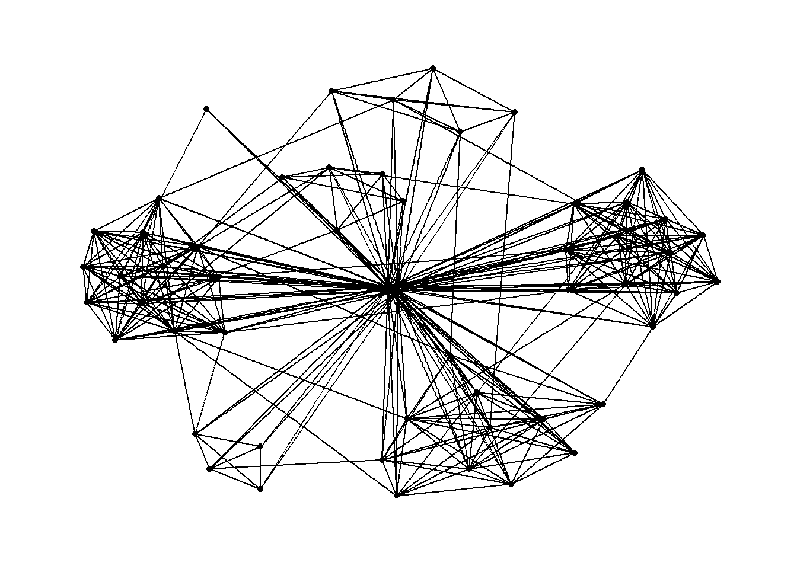
Things to learn from the code chunk above
- layout argument is used to define the layout to be used.
5.5 Modifying network nodes
In this section, we colour each node by referring to their respective departments.
g <- ggraph(GAStech_graph,
layout = "nicely") +
geom_edge_link(aes()) +
geom_node_point(aes(colour = Department,
size = 3))
g + theme_graph()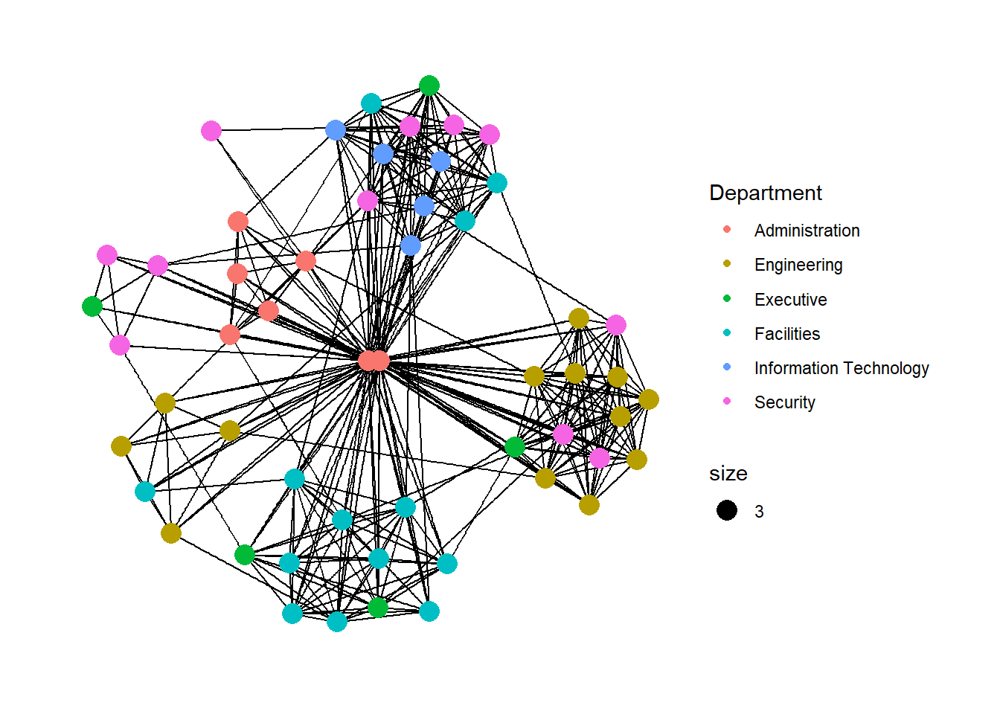
Things to learn from the code chunk above
geom_node_point()is equivalent in functionality togeo_point()of ggplot2. It allows for simple plotting of nodes in different shapes, colours and sizes. In the codes chnuks above colour and size are used.
5.6 Modifying edges
In the code chunk below, the thickness of the edges will be mapped with the Weight variable.
g <- ggraph(GAStech_graph,
layout = "nicely") +
geom_edge_link(aes(width=Weight),
alpha=0.2) +
scale_edge_width(range = c(0.1, 5)) +
geom_node_point(aes(colour = Department),
size = 3)
g + theme_graph()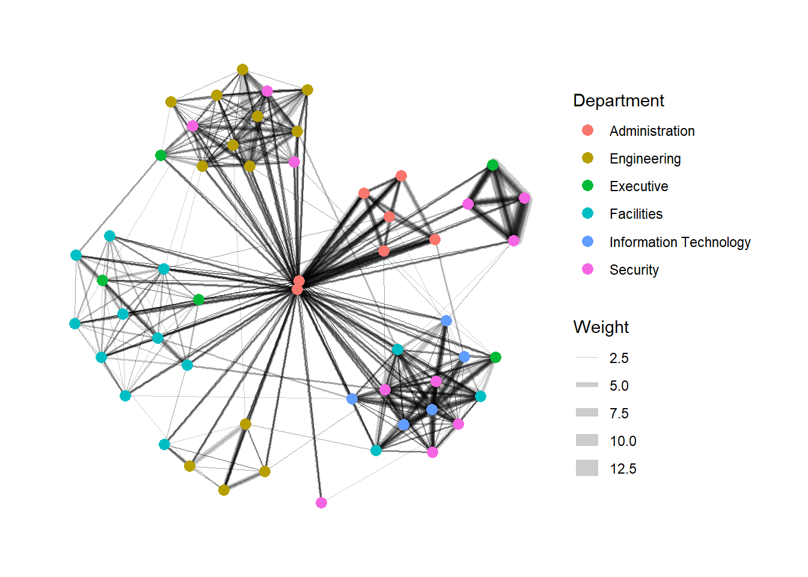
Things to learn from the code chunk above
geom_edge_link()draws edges in the simplest way - as straight lines between the start and end nodes. But, it can do more that that. In the example above, argument width is used to map the width of the line in proportional to the Weight attribute and argument alpha is used to introduce opacity on the line.
5.7 Plotting practice
g <- ggraph(GAStech_graph,
layout = "nicely") +
geom_edge_fan2(aes(width=Weight,
colour=node.Department),
alpha=0.2,
show.legend = FALSE,
strength = 1.5) +
scale_edge_width(range = c(0.1, 5)) +
geom_node_point(aes(colour = Department),
size = 3)
g + theme_graph()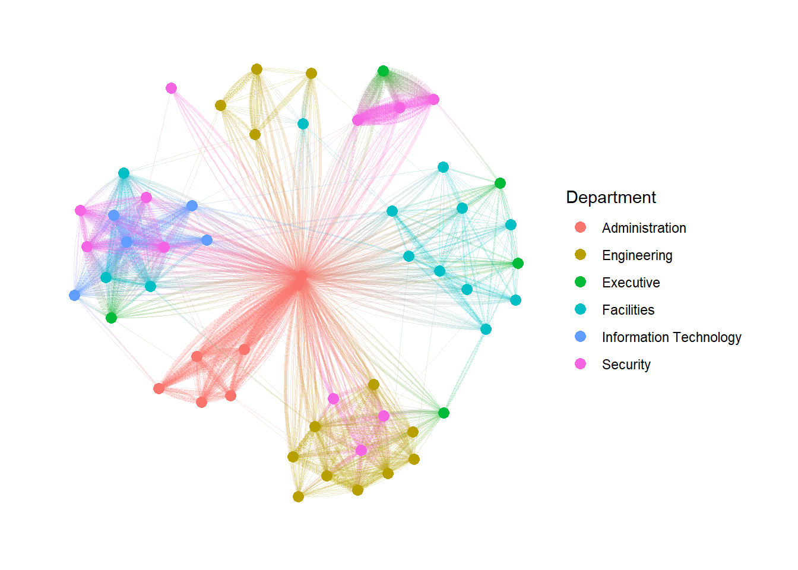
Things to learn from the code chunk above
geom_edge_fan2()behaves like geom_edge_link() and draws a straight line if there are no parallel edges. But if parallel edges exists it will spread them out as arcs with different curvature.- By customizing colour, we colour the edges by referring to their respective departments.
6 Creating facet graphs
In visualising network data, faceting can be used to reduce edge over-plotting in a very meaning way by spreading nodes and edges out based on their attributes.
There are three functions in ggraph to implement faceting, they are:
| Function | Description | Quick access |
|---|---|---|
facet_edges() |
|
click here |
facet_nodes() |
|
click here |
facet_graph() |
|
- |
6.1 Working with facet_edges()
set_graph_style()
g <- ggraph(GAStech_graph,
layout = "nicely") +
geom_edge_link(aes(width=Weight),
alpha=0.2) +
scale_edge_width(range = c(0.1, 5)) +
geom_node_point(aes(colour = Department),
size = 2)
g + facet_edges(~Weekday)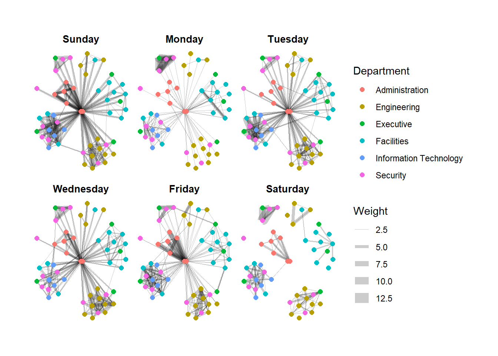
The code chunk below uses theme() to change the position of the legend.
set_graph_style()
g <- ggraph(GAStech_graph,
layout = "nicely") +
geom_edge_link(aes(width=Weight),
alpha=0.2) +
scale_edge_width(range = c(0.1, 5)) +
geom_node_point(aes(colour = Department),
size = 2) +
theme(legend.position = 'bottom')
g + facet_edges(~Weekday)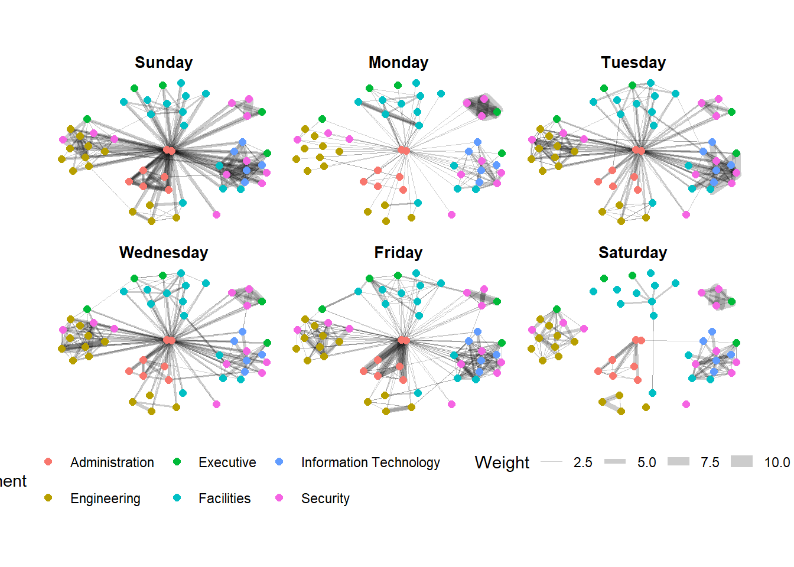
The code chunk below adds frame to each graph.
set_graph_style()
g <- ggraph(GAStech_graph,
layout = "nicely") +
geom_edge_link(aes(width=Weight),
alpha=0.2) +
scale_edge_width(range = c(0.1, 5)) +
geom_node_point(aes(colour = Department),
size = 2)
g + facet_edges(~Weekday) +
th_foreground(foreground = "grey80",
border = TRUE) +
theme(legend.position = 'bottom')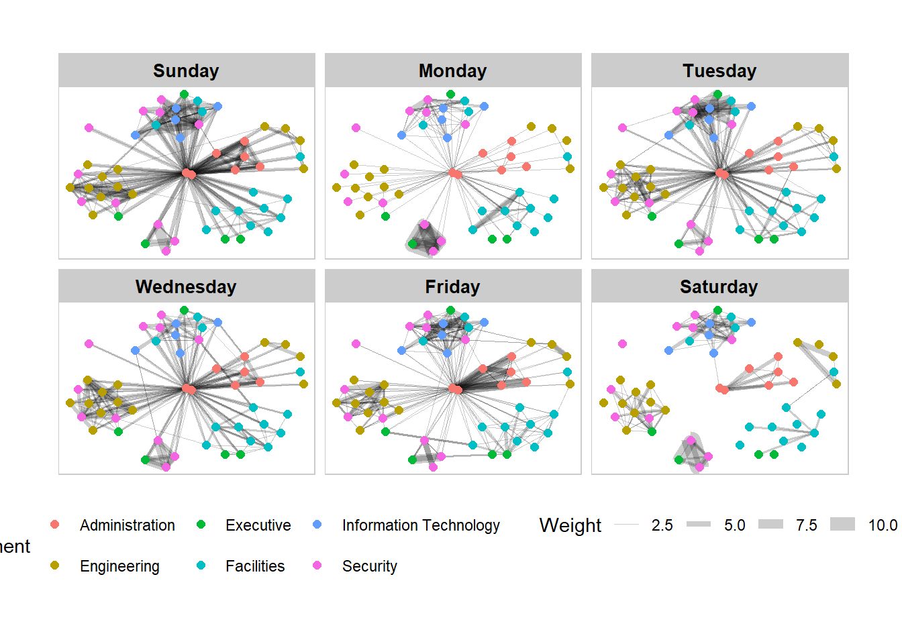
6.2 Working with facet_nodes()
set_graph_style()
g <- ggraph(GAStech_graph,
layout = "nicely") +
geom_edge_link(aes(width=Weight),
alpha=0.2) +
scale_edge_width(range = c(0.1, 5)) +
geom_node_point(aes(colour = Department),
size = 2)
g + facet_nodes(~Department)+
th_foreground(foreground = "grey80",
border = TRUE) +
theme(legend.position = 'bottom')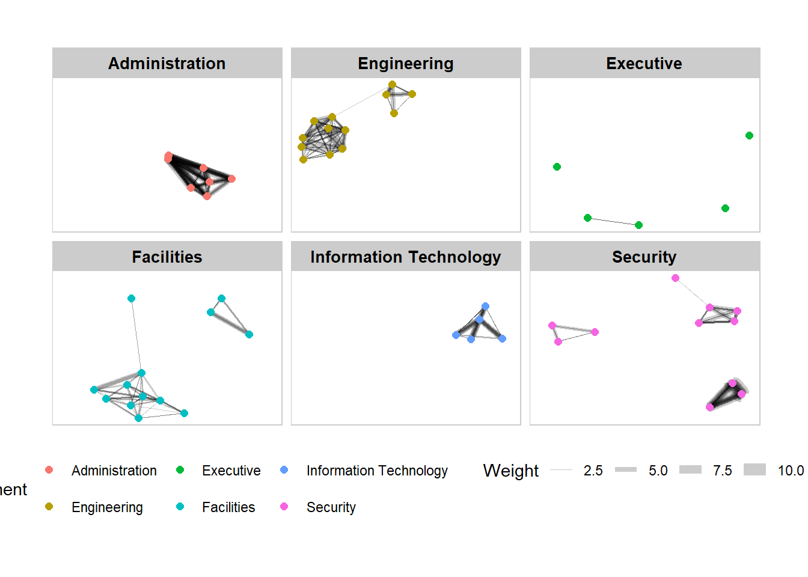
7 Network Metrics Analysis
7.1 Computing centrality indices
Centrality measures are a collection of statistical indices use to describe the relative important of the actors are to a network. There are four well-known centrality measures, namely: degree, betweenness, closeness and eigenvector. It is beyond the scope of this hands-on exercise to cover the principles and mathematics of these measure here. Refer to Chapter 7: Actor Prominence of A User’s Guide to Network Analysis in R to gain better understanding of theses network measures.
g <- GAStech_graph %>%
mutate(betweenness_centrality = centrality_betweenness()) %>%
ggraph(layout = "fr") +
geom_edge_link(aes(width=Weight),
alpha=0.2) +
scale_edge_width(range = c(0.1, 5)) +
geom_node_point(aes(colour = Department,
size=betweenness_centrality))
g + theme_graph()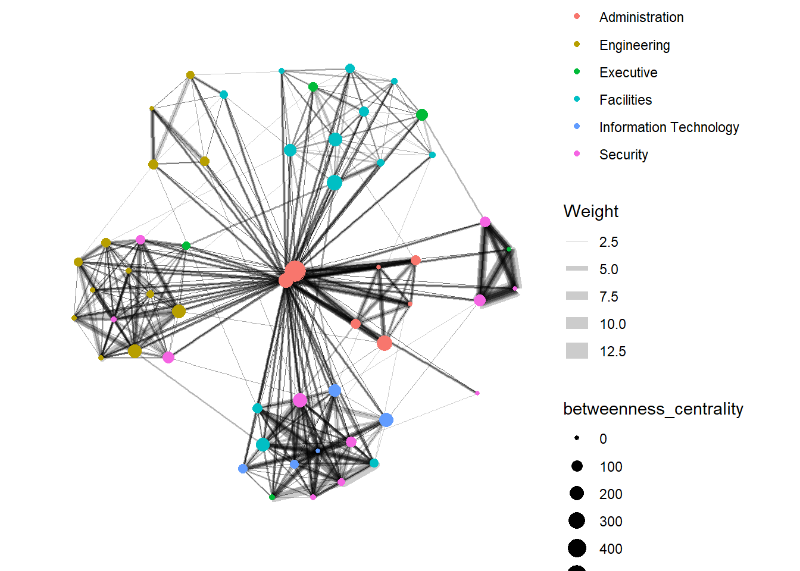
Things to learn from the code chunk above
mutate()of dplyr is used to perform the computation.- the algorithm used, on the other hand, is the
centrality_betweenness()of tidygraph.
7.2 Visualising network metrics
It is important to note that from ggraph v2.0 onward tidygraph algorithms such as centrality measures can be accessed directly in ggraph calls. This means that it is no longer necessary to precompute and store derived node and edge centrality measures on the graph in order to use them in a plot.
g <- GAStech_graph %>%
ggraph(layout = "fr") +
geom_edge_link(aes(width=Weight),
alpha=0.2) +
scale_edge_width(range = c(0.1, 5)) +
geom_node_point(aes(colour = Department,
size = centrality_betweenness()))
g + theme_graph()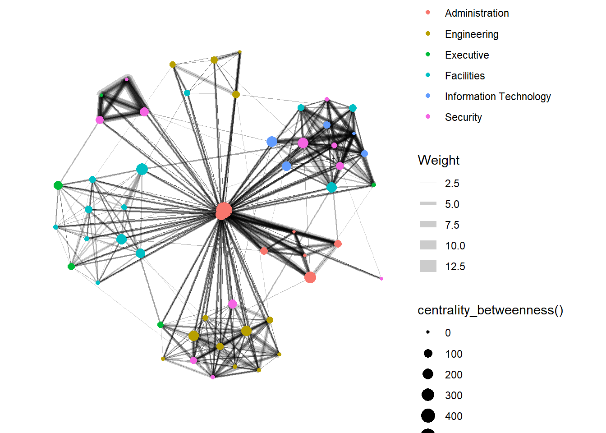
7.3 Visualising Community
tidygraph package inherits many of the community detection algorithms imbedded into igraph and makes them available to us, including Edge-betweenness (group_edge_betweenness), Leading eigenvector (group_leading_eigen), Fast-greedy (group_fast_greedy), Louvain (group_louvain), Walktrap (group_walktrap), Label propagation (group_label_prop), InfoMAP (group_infomap), Spinglass (group_spinglass), and Optimal (group_optimal). Some community algorithms are designed to take into account direction or weight, while others ignore it. Use this link to find out more about community detection functions provided by tidygraph,
In the code chunk below group_edge_betweenness() is used.
g <- GAStech_graph %>%
mutate(community = as.factor(group_edge_betweenness(weights = Weight, directed = TRUE))) %>%
ggraph(layout = "fr") +
geom_edge_link(aes(width=Weight),
alpha=0.2) +
scale_edge_width(range = c(0.1, 5)) +
geom_node_point(aes(colour = community))
g + theme_graph()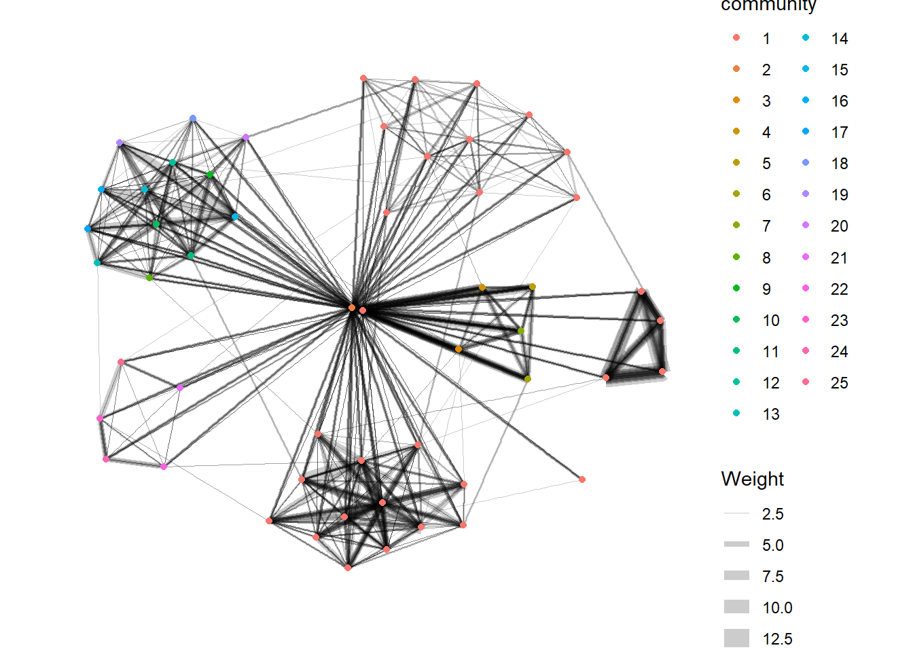
8 Building Interactive Network Graph with visNetwork
- visNetwork() is a R package for network visualization, using vis.js javascript library.
- visNetwork() function uses a nodes list and edges list to create an interactive graph.
- The nodes list must include an “id” column, and the edge list must have “from” and “to” columns.
- The function also plots the labels for the nodes, using the names of the actors from the “label” column in the node list.
- The resulting graph is fun to play around with.
- You can move the nodes and the graph will use an algorithm to keep the nodes properly spaced.
- You can also zoom in and out on the plot and move it around to re-center it.
8.1 Data preparation
Before we can plot the interactive network graph, we need to prepare the data model by using the code chunk below.
GAStech_edges_aggregated <- GAStech_edges %>%
left_join(GAStech_nodes, by = c("sourceLabel" = "label")) %>%
rename(from = id) %>%
left_join(GAStech_nodes, by = c("targetLabel" = "label")) %>%
rename(to = id) %>%
filter(MainSubject == "Work related") %>%
group_by(from, to) %>%
summarise(weight = n()) %>%
filter(from!=to) %>%
filter(weight > 1) %>%
ungroup()8.2 Plotting the first interactive network graph
The code chunk below will be used to plot an interactive network graph by using the data prepared.
visNetwork(GAStech_nodes,
GAStech_edges_aggregated)8.3 Working with layout
In the code chunk below, nicely layout is used.
visNetwork(GAStech_nodes,
GAStech_edges_aggregated) %>%
visIgraphLayout(layout = "layout_nicely") Visit Igraph to find out more about visIgraphLayout’s argument.
8.4 Working with Nodes
visNetwork() looks for a field called “group” in the nodes object and colour the nodes according to the values of the group field. visNodes() is used to change the properties of the nodes. Refer to this link for the documentation.
The code chunk below rename Department field to group.
GAStech_nodes <- GAStech_nodes %>%
rename(group = Department) When we rerun the code chunk below, visNetwork shades the nodes by assigning unique colour to each category in the group field.
visNetwork(GAStech_nodes,
GAStech_edges_aggregated) %>%
visIgraphLayout(layout = "layout_nicely") %>%
visNodes(shape = c("box"),
opacity = 0.8,
size = 30,
label= "label") %>%
visLegend() %>%
visLayout(randomSeed = 123)8.5 Working with Edges
In the code run below visEdges() is used to symbolise the edges.
- The argument arrows is used to define where to place the arrow.
- The smooth argument is used to plot the edges using a smooth curve.
Refer to this link for the documentation.
visNetwork(GAStech_nodes,
GAStech_edges_aggregated) %>%
visIgraphLayout(layout = "layout_nicely") %>%
visEdges(arrows = list(to = list(enabled = TRUE, scaleFactor = 1.5)),
smooth = list(enabled = TRUE,
type = "curvedCW")) %>%
visNodes(font = list(size = 20)) %>%
visLegend() %>%
visLayout(randomSeed = 123)Visit Option to find out more about visEdges’s argument.
8.6 Interactivity
In the code chunk below, visOptions() is used to incorporate interactivity features in the data visualisation.
- The argument highlightNearest highlights nearest when clicking a node.
- The argument nodesIdSelection adds an id node selection creating an HTML select element.
# Sort the nodes data frame by the 'id' column in ascending order
GAStech_nodes <- GAStech_nodes[order(GAStech_nodes$label), ]
# create the visNetwork visualization
visNetwork(GAStech_nodes,
GAStech_edges_aggregated) %>%
visIgraphLayout(layout = "layout_nicely") %>%
visOptions(highlightNearest = TRUE,
nodesIdSelection = TRUE) %>%
visNodes(size = 20,
font = list(size = 20)) %>%
visEdges(color = list(color = "lightgray", highlight = "red"), width = 2) %>%
visLegend() %>%
visLayout(randomSeed = 123)Visit Option to find out more about visOption’s argument.